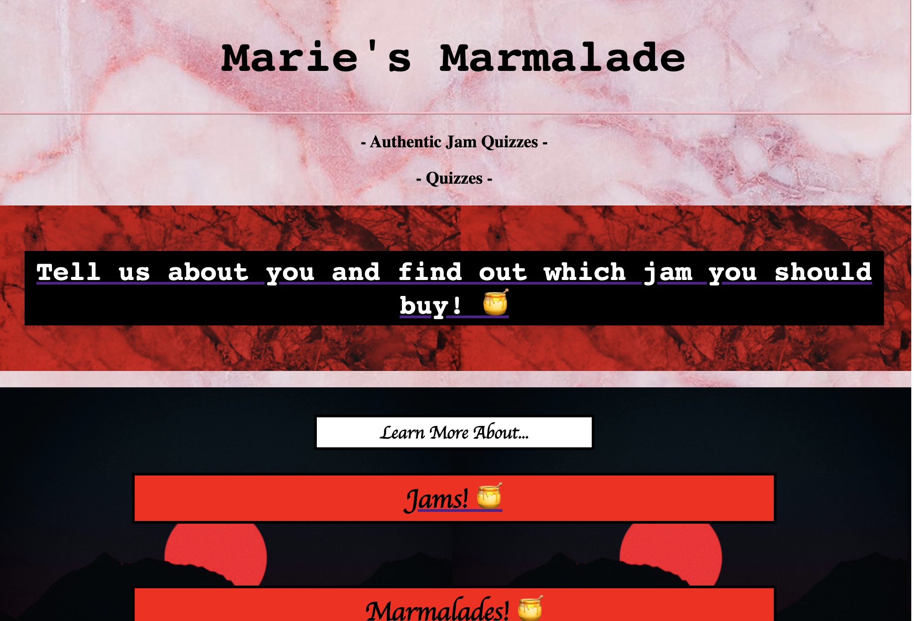

Pauline's Portfolio
projects
part 2 - forms, java, and checkboxes


click image to go to webpage

this project's goal was to create a website that had a form within it. my favourite part
was creating the "marie's marmalade" brand and choosing a color palette to work with. in order
to create different outcomes for my survey, i had to use javascript for the very first time. since we
had only been working in html, it was a very different experience, but i learned a lot about the different
attributes that java can help you acheive. this was definitely one of my more difficult projects
but the outcome of the survey made it worth it, and it was really fun experimenting with the different outcomes.